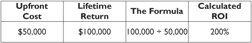
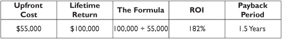

Good Investment or Bad? How Do You Decide?
Whether the business is a roadside ice cream vendor or a spacecraft manufacturer, management must at some point invest in the equipment it needs to run the enterprise. Wonder Widget’s business falls somewhere in the middle. We all know how valuable its widgets are to its customers, but they don’t give much thought to the capital decisions that management must make to ensure its products are the best they can be for the price. In this chapter we review the tools management uses to make investment decisions. You’ll see how the same tools can be used by any company, including yours. The trick is knowing which tool to use and when to use it.
Capital Investment: A Game of Choices, Risks, and Hoped-For Outcomes
Probably the most challenging choices most companies must make are those that involve capital investment—allocating cash to R&D, manufacturing, sales and marketing, and administration. Since no organization has unlimited resources (except perhaps the U.S. government), the choices that Wonder Widget’s management must make about how to best allocate its resources will determine its success or failure in the long run. You only have to recall the rise of Google or the decline of Research in Motion/BlackBerry to realize that those decisions can make or break a company’s future and impact its ultimate survival.
Here’s the basic idea. We make an investment. We buy a machine or a building or a truck or whatever. We measure how that purchase will enhance the company’s profitability while we use it. If we’re a well-managed company, we do a front-end estimate of those calculations before we write the check. As with most business decisions, allocating capital among competing alternatives is about making the best choices. Since we can’t always control the outcomes of our decisions, we look for ways to estimate the cost, minimize the risk, and maximize the return before we make the investment. The general term for such analysis is return on investment (ROI), but in reality there are several ways to calculate expected returns, some with widely varying results. That’s why choosing the tool, understanding its strengths and limitations, and assessing the risk inherent in each tool require forethought. Let’s get started with the simplest of the tools, the generic ROI.

Return on investment (ROI) The amount of money earned on an investment compared to the amount of money invested to gain that return, most often presented as a percentage of the amount invested.
Payback period The time it takes, usually presented in terms of months or years, to earn back the total amount of money invested, without regard for any opportunity cost or the cost of money. An investment of $10,000 that earns $5,000 a year would be said to have a payback period of two years.
Return on Investment: The Concept and the Purpose
In its simplest form, ROI involves comparing the total cost of an investment with the total amount that it earned for the company during its useful life, expressed as a percent. Let’s look at an example taken from an operating experience of Wonder Widget. Assume that Wonder Widget’s plant management was considering buying a widget stamping machine for the factory. Automating this operation instead of doing it the old way would save them $10,000 a year in operating costs (maybe because the machine doesn’t take coffee breaks or sick leave). It will last for 10 years and Wonder Widget will pay $50,000 for it.

The total return over 10 years is expected to be $100,000. Comparing the cost to the savings gives us an ROI of 200 percent. Sounds like a pretty good deal. The VP of manufacturing brought the proposal to a management meeting for discussion and approval, and he added confidently that there weren’t many ways to make that much money on that small an investment. Someone suggested that maybe they should buy a dozen of them.
Or maybe not. At that point the CFO had two questions:
1. How do we install it?
2. What other upfront costs will we incur to get it up and running?
The CFO said the simple ROI calculation that the manufacturing VP did, while accurate, was not enough information on which to base a decision; the missing information could significantly alter the proposed savings and the actual benefit of the purchase. So the manufacturing VP went back to his staff to answer the questions and find a better way to make the case. They decided that a different analysis tool would add impact and be just as easy to calculate. They chose the payback period method.
Payback Period: A Quick and Easy Way to Understand the Approach
Payback period is just that, the length of time it takes to earn back the original investment through the cumulative cost savings or additional earnings generated by that investment, expressed in months or years. After recognizing the CFO’s concerns, the factory analysts dug into the numbers and determined that there would indeed be setup costs they had not included. Out-of-pocket setup costs were estimated at $5,000. Their calculations then took that into account as well as the payback period, and their proposal looked slightly different at the next management meeting:

After hearing the revised presentation, the CFO noted that the ROI was still very good, and the payback period was a good way to determine how soon they would earn back their investment. After reaching the payback period, everything the machine earned would be profit—well, almost. She had a couple of new questions.
1. What other costs will we incur to keep it working—maintenance, repairs, downtime, etc.?
2. When are those costs likely to occur—every year or later, as the machine ages?
The CFO noted that those costs might be incurred years down the road, but they would still impact the net return on the investment, and repair costs may not be easy to estimate for the later years when those costs typically climb. Further, she added, interest rates were expected to rise over the next few years, and the time value of money had to be considered. Now the calculations were more complex, but the information gained was more valuable.
Going back to the vendor, the analysts learned they could buy an annual maintenance contract that would spread the maintenance costs evenly over the life of the machine, avoiding the painful climb in maintenance and repair costs as the machine aged. The annual maintenance contract would cost $1,500 a year and would cover all parts and labor for the life of the machine.
The Time Value of Money: Today and in the Future
It’s easy to see that having a dollar today is worth more than having a dollar a year from now. We know that we can invest a dollar we have, but we can’t invest a dollar we don’t yet have. And the longer it takes for us to get that dollar, the less it’s worth because we have to wait longer to get the benefit from having it. Whether it’s money being paid out or money being received, when it happens makes it worth more or less to the company in terms of today’s dollars. This is the concept of present value and future value.
Present value The value of a sum of money in today’s terms, when received or paid either today or at a future date. A sum of money received today has a present value of its face amount, whereas a sum of money received a year from now has less value today because of the delay in receiving it and the lost earning opportunity that such a delay represents, based on a defined interest rate assumption.
Future value The value at some future date of a sum of money invested today, to be returned at a future date, together with its earnings at some assumed rate of return.
Consider this example: A dollar in your pocket today has a value of $1. That is its present value. If you invest that dollar at 10 percent interest for one year, it will be worth $1.10 at the end of that year.
$1 + ($1 × 10%) = $1.10
So your dollar’s future value is $1.10. (Of course, if you invested that dollar at 4 percent, its future value in one year would only be $1.04.) And when you consider the time element, you get the benefit of compound interest, because the interest itself earns interest. So that dollar invested for two years at 10 percent, assuming the interest earned is applied—compounded—annually, the future value of your $1 at the end of the second year would be $1.21. Its growth would look like this:
Year 1: $1 + ($1 × 10%) = $1.10
Year 2: $1.10 + ($1.10 × 10%) = $1.21
Key Fact: Notice that future value is a function of time, rate, and the compounding period, that is, how often the bank applies interest to your account so the interest can earn interest along with the principal. If your $1 were invested in an account that applied the interest earned—compounded—quarterly instead of annually, your money would grow a bit faster, like this:
End of Quarter 1: $1 + ($1 × 10% × 3/12) = $1.025
End of Quarter 2: $1.025 + ($1.025 × 10% × 3/12) = $1.050625
End of Quarter 3: $1.050625 + ($1.050625 × 10% × 3/12) = $1.076890625
End of Quarter 4: $1.076890625 + ($1.076890625 × 10% × 3/12) = $1.103812890625
Your $1 would now have a future value of $1.1038 instead of $1.10. Doesn’t sound like much, does it? But let’s remove all the decimal places to make it more meaningful. Let’s take $1,000 and compound interest daily instead of annually. Without showing you the 365 daily calculations, trust me—you do, don’t you?—when I tell you that $1,000 in present value would have a future value of $1,105.16. That’s a 5 percent growth in earnings by compounding daily instead of annually.
Keep in mind that this works both ways. If you promise to lend money to someone, say your itinerant brother, who will need $1,105 in a year to pay for a new paint job for his car—yes, he checked the price, and it’s $1,000 plus sales tax of 10.5 percent—you would need to put away $1,000 today and earn 5 percent compounded daily to be ready to honor your promise in a year.
Let’s get back to Wonder Widget’s investment decision. Without waiting for the next meeting, the CFO sat down with the manufacturing VP to describe in more detail her concerns about the time value of money. She posed the question that the CEO was likely to ask her, “What else could we do with those funds that would earn even more money? We’re either going to take the purchase price out of the company savings (earning a paltry return today, but almost certainly more later) or borrow the money and pay interest on a loan.” Those were additional costs the factory analysts had not taken into consideration because they didn’t impact the factory. But they would impact the company’s overall performance, and Wonder Widget’s CEO would likely ask what other way could they evaluate this opportunity and compare it with the other investment opportunities they had.
So the CFO and the VP discussed the timing of the payment. Suppose they took the $50,000 purchase price from company cash and paid for the machine up front. That would eliminate the need to borrow money and pay interest on a loan, but it would also drain the company’s cash reserves. An equipment loan would preserve the company’s cash and spread the payments over time, perhaps enabling the company to save enough on using the machine to cover the interest cost on the loan in addition to a reasonable ROI. If the company had other worthwhile opportunities or critical needs to consider, this might be an issue for discussion. It only took a moment for the CFO to scotch the idea of using company cash reserves to make the purchase, since the cash would be needed to build inventories for the upcoming selling season. So if the machine was going to be purchased, it would have to be with a bank loan at about 5 percent interest.
So far, so good. They knew the simple ROI and the payback period, but still didn’t know the effective ROI after considering the time value of the money invested vs. the money saved. The CFO explained to the manufacturing VP the concept of discounted cash flow, the next level of analysis she wanted to see.
Discounted Cash Flow: Evaluating Long-Term Investments
The purpose of a discounted cash flow calculation is to fine-tune the basic ROI analysis by adjusting for the time value of money. This is especially valuable when the cash inflows and/or outflows happen at different times during the life of the investment. In the case of the proposed stamping machine, the outflows include the upfront purchase price and the annual payments for the ongoing maintenance contract. The inflows, while subject to operating volumes, are generally believed to be $10,000 a year, earned at the assumed rate of $833.33 a month. The maintenance contract of $1,500 is paid annually, presumably at the beginning of each year. Ready for the next step?

Discounted cash flow A more sophisticated way to look at ROI. Discounted cash flow takes into account the cost of money employed and the amount of time it has been committed, as well as the timing of the earnings on that investment, all at an assumed interest rate.
We next have to decide what interest rate to apply to those amounts. The CFO opted for 5 percent as their average borrowing cost. This is a judgment call among the methods that she might have used to select a rate, and we discuss that a bit more in the next section. For now, assume that every dollar saved earns Wonder Widget a 5 percent return. So, the questions are: What is the present value of the stream of savings, less the present value of the stream of payments? How does that compare to the present value of the upfront investment, which we already know is $55,000?
At this point, some books on this topic insert a page or two full of excerpts from a statistical table used to calculate the present value. Others walk you through an elaborate formula that does the same thing more easily. Both seem to want to make accountants of their readers, but that’s not why I wrote this book. I want you to understand the concepts so you can get someone else to do the heavy lifting.
Think this through for a moment. You know from our discussion of present value that money that comes in the future—like our annual cost savings—is worth less than its face amount because we have to wait for it, while the cost of the machine purchase is upfront. As it happens, the present value of savings of $833.33 a month for 10 years, with a face value amount of $100,000, at a 5 percent assumed rate of return, is $78,567 because of the waiting time for the money. Similarly, the maintenance contract payments, which total $15,000, will also have a smaller present value because we pay them out over time, and that present value at the same 5 percent yield is $11,583. As for the bank loan on the purchase price, our 5 percent equipment loan will have 60 monthly payments, but since the loan interest rate is the same 5 percent and we plan to finance the installation costs as well, the present value of our machine purchase is still $55,000. Here’s the resulting tally:
So our net present value is the sum of the combined numbers above, or $11,984. That’s the value in today’s dollars of making the proposed investment of $55,000, and it represents a 21.8 percent return in today’s dollars (11,984 ÷ 55,000 = 21.8%).
The VP of manufacturing leaps out of his chair, pumps the air, and yells, “Yes!” He thinks he’s got the sale, and maybe he does. But you know how CFOs are. The good ones are thorough to a fault. There’s always one more question, or two. In this case the CFO wants to go through the mental checklist she uses to evaluate all investments, whether they look instantly good or instantly bad, so that every opportunity is given the same degree of scrutiny. Now back to class for some more theory.
Weighted Average Cost of Capital: Enhancing the Return to Shareholders
When the company has well-informed investors, as Wonder Widget does, management must keep an eye on the overall return the company pays for the capital it has attracted, including the cost of its debt (typically interest expense) and the cost of its equity (usually through dividends). All that adds up to a material consideration in assessing the company’s overall value, as company valuation is critical to strategic initiatives like raising investor capital for growth, negotiating new credit lines, mergers and acquisitions, and ultimately, the exit strategy of the company’s current owners. The higher a company’s weighted average cost of capital, the lower its valuation, the higher the perceived risk of its business, and the higher cost it must typically pay for additional capital.
Weighted average cost of capital (WACC) The calculated cost of all the capital employed by the business, including capital obtained from trade credit, all other liabilities, and stockholder investment (via dividends paid). This calculation helps management evaluate the value to the company of some investment with a given return by comparing it to the overall cost the company pays for the capital it employs before making the investment.
How does the arithmetic work? Think of the money borrowed from a bank. The Wonder Widget balance sheet in Chapter 3 shows short-term notes payable to banks of $150,000. If the interest rate on those borrowings is 6 percent, then $9,000 (150,000 × 6%) is the cost of capital for the short-term debt. For accounts payable incurred on normal interest-free trade terms, the cost of capital is typically zero, a big plus. For capital stock, it’s the dividends paid to stockholders. The weighted average cost of capital (WACC) is the combination of all those elements across the company. For Wonder Widget, the calculation would look like Figure 9-2, based on the balance sheet in Figure 3-1:
*Dividends paid annually to stockholders, shown on Figure 6-1. Income tax effect omitted.
Figure 9-2. Weighted average cost of capital
As you can see, Wonder Widget’s WACC is favorable, typical of a well-run company, and well below the rate of return expected for the new machine, another arrow in the VP’s quiver when management next meets. The new machine, if it achieves the projected returns, will increase profits, raise stockholders’ equity, and further lower the WACC. Everybody wins.
Internal Rate of Return: Deciding What Return Is Good Enough
The last commonly used measure of the value of an investment return is internal rate of return (IRR). I’ve noticed that managers often confuse IRR with ROI, and they label an ROI calculation as an IRR, when they’ve never actually calculated their IRR. For most companies this last calculation is an extra level of sophistication, but for the completeness of this chapter I want you to understand what IRR really is. So here goes.
Internal rate of return (IRR) The rate of return, stated as a percent, at which the return on the investment equals the cost of capital to make the investment, with both numbers calculated at present value. Put another way, it’s the discount rate that makes the net present value of all cash flows from a particular project equal to zero.
The purpose of an internal rate of return (IRR) calculation is to find that rate of return, stated as a percent, at which the return on the investment equals the cost of capital to make the investment, with both amounts calculated at present value. Put another way, it’s the discount rate that makes the net present value of all cash flows from a particular project equal to zero. Generally speaking, the higher a project’s IRR, the more desirable it is to undertake the project. As such, you could use IRR to rank several prospective projects. Assuming all other factors are equal among the various projects, the project with the highest IRR would probably be considered the best and undertaken first. Recall the net present value of Wonder Widget’s machine investment was $11,984, or 22 percent, well above its WACC of 1.45 percent. Had the projected savings been less over the 10-year period, the net present value of the investment would have shrunk, and at some point it would neither add to nor subtract from the company’s WACC. You can get a big insight here: Never invest in a project with a net present value or an IRR of less than zero. Of course, to reach that decision you must do the math.
What’s left to talk about? As noted at the beginning of this chapter, the role of these investment analysis tools is to help management estimate the cost, minimize the risk, and maximize the return. Having estimated the cost and calculated the return, the last item on the CFO’s mental checklist is minimizing the risk, and her final questions before a decision is made fall into that area. She asks:
 What are the chances that the stamping work this machine does won’t be needed in 10 years as a result of technology advances, product obsolescence, process evolution, etc.?
What are the chances that the stamping work this machine does won’t be needed in 10 years as a result of technology advances, product obsolescence, process evolution, etc.?
 How certain can we be that the vendor can honor the maintenance commitment for the entire period without significantly increasing the price?
How certain can we be that the vendor can honor the maintenance commitment for the entire period without significantly increasing the price?
 How sure are we that the machine will consistently produce the projected savings?
How sure are we that the machine will consistently produce the projected savings?
Risk Management: Assessing the Probability That We Might Be Wrong
In every business decision dealing with the future, after all the estimates have been made and the numbers crunched, there’s one element of the decision that can’t be forecast accurately: the risk that the company’s assumptions may be wrong. The possibility always exists that something can happen down the road that we couldn’t forecast or that we could forecast but couldn’t protect against. Management’s role in addressing that risk is called risk management. In its simplest terms it means management must consider the options and take appropriate action to:
 Remove the risk entirely, thus avoiding the consequences;
Remove the risk entirely, thus avoiding the consequences;
 Mitigate some of the risks and accept those that can’t be removed;
Mitigate some of the risks and accept those that can’t be removed;
 Pass on the risk to others, e.g., through insurance, thus avoiding it entirely; or
Pass on the risk to others, e.g., through insurance, thus avoiding it entirely; or
 Knowingly accept the risk that the event may occur and bear the cost if it does.
Knowingly accept the risk that the event may occur and bear the cost if it does.
I can’t tell you how the CFO satisfied herself and the CEO that their risks in making this investment were reasonably under control, but they did move ahead with the purchase, and the machine did perform pretty much as projected. You can’t ask for more than that.
Manager’s Checklist for Chapter 9
 The goal of ROI analysis is to estimate the cost, the risk, and the return when considering a capital investment.
The goal of ROI analysis is to estimate the cost, the risk, and the return when considering a capital investment.
 Return on investment (ROI) is the percentage of gain or profit that comes from an investment over the investment’s projected life, before considering the time value of money or risk management. It’s the fundamental tool for assessing the worthiness of a given capital investment.
Return on investment (ROI) is the percentage of gain or profit that comes from an investment over the investment’s projected life, before considering the time value of money or risk management. It’s the fundamental tool for assessing the worthiness of a given capital investment.
 Payback period is the number of time periods it takes for a given investment to return enough gain (profit) to fully return the investment’s original cost, again before considering the time value of money or risks.
Payback period is the number of time periods it takes for a given investment to return enough gain (profit) to fully return the investment’s original cost, again before considering the time value of money or risks.
 Discounted cash flow (DCF) is the ROI calculation that takes into account the time value of money, using either present value or future value calculations, to place the comparison of cash inflows and cash outflows on an equal footing.
Discounted cash flow (DCF) is the ROI calculation that takes into account the time value of money, using either present value or future value calculations, to place the comparison of cash inflows and cash outflows on an equal footing.
 Weighted average cost of capital (WACC) is the percentage that demonstrates the overall cost to a company of all the capital it employs in its business, both debt and equity.
Weighted average cost of capital (WACC) is the percentage that demonstrates the overall cost to a company of all the capital it employs in its business, both debt and equity.
 Internal rate of return (IRR) is the determination of that point, expressed as a percentage, where the cost of capital invested in a project equals the return of capital from that project, both measured in present value terms.
Internal rate of return (IRR) is the determination of that point, expressed as a percentage, where the cost of capital invested in a project equals the return of capital from that project, both measured in present value terms.
 Uncertainties are present in any forecast, and management must decide how to deal with those uncertainties to minimize the risk of making a decision that harms the company.
Uncertainties are present in any forecast, and management must decide how to deal with those uncertainties to minimize the risk of making a decision that harms the company.